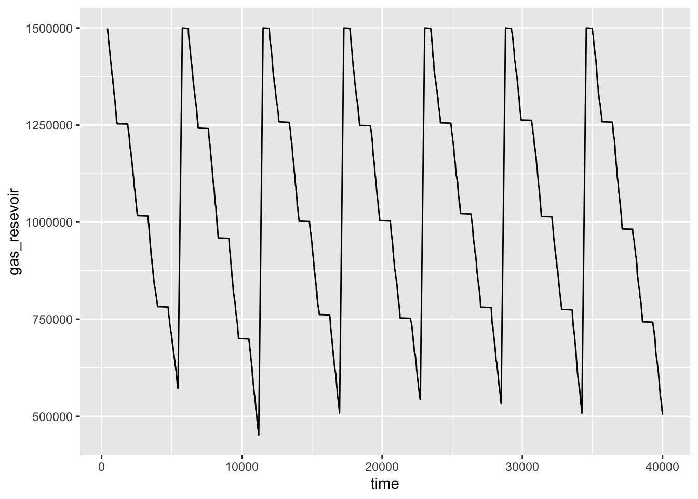
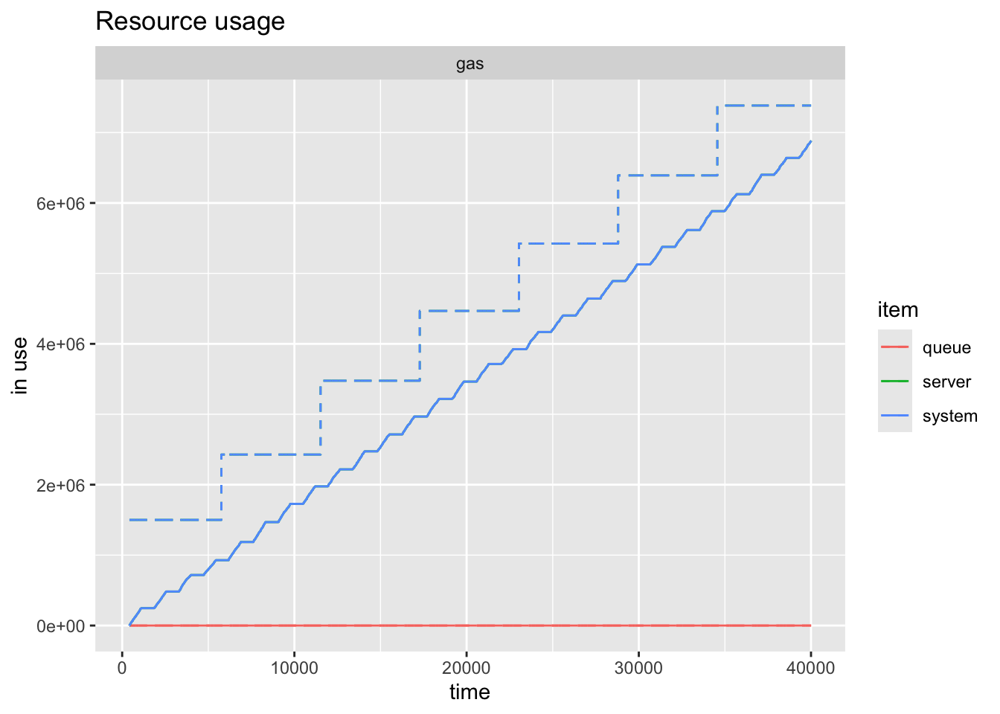
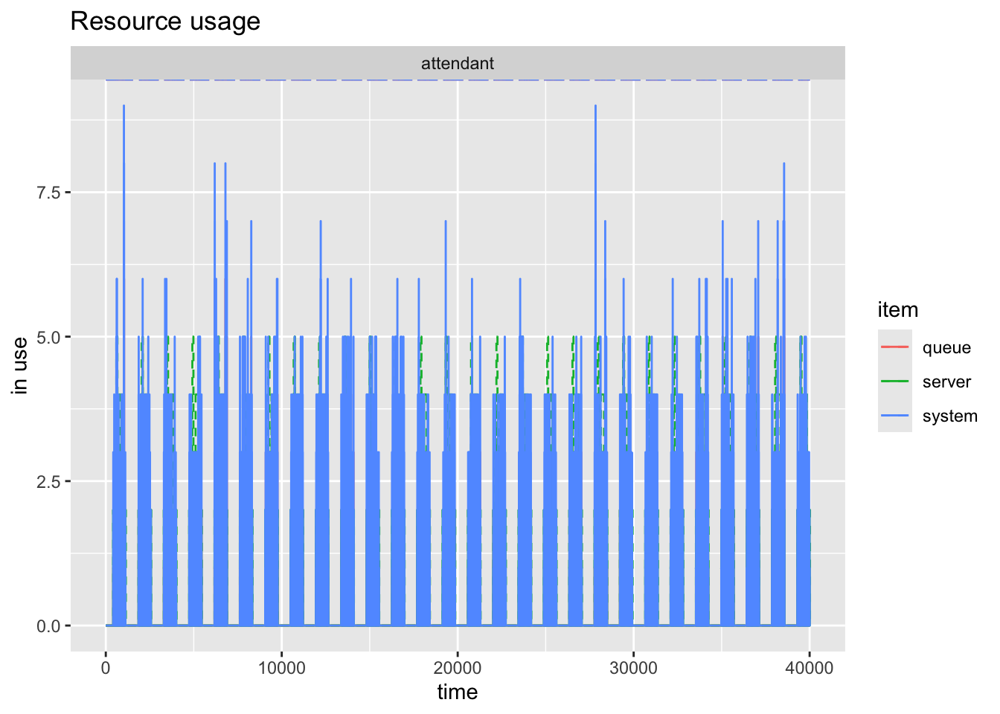

library(twopexp)#8 Gas Station Template
14:540:384: Simulation Models in IE (Spring 2025)
1 Learning Objectives
- Schedule Resources
- Dynamically interact with simulation (retrieve information and change behavior)
- Lock resources (TBC)
- Define alternative trajectories
2 Load Packages
Note that here I am loading twopexp which we haven’t used before.
Now all the usual packages…
library(tidyverse)
library(fitdistrplus)
library(simmer)
library(simmer.bricks)
library(simmer.plot)
library(knitr)
set.seed(1766)3 Problem
A medium sized gas station has two lanes of unidirectional traffic, each with three filling stations. Attendants on shift share responsibilities for all three. During its daily operations, the station will typically have around 250 vehicles (\(\sim \mathcal{P}(250/day)\)), each taking on average 11 gallons of gas (\(\sim \mathcal{W}(5.3, 11)\)). It has a reservoir of 15,000 gallons which is filled to capacity at the end of every fourth day. The gas pumps flow at 5 gal/minute. Initiating service follows a two-parameter exponential with the minimum time being 25 seconds and a decay constant of 0.75. Finalizing payment also follows a two-parameter exponential with a minimum time of 30 seconds and a decay constant of 0.9. Cars will leave with a probability of 0.75 if there are 10 or more cars in the system.
Model this gas station for twenty-five replications of 4 consecutive weeks.
For this part, we are not yet worrying about the pumps and lanes, just the attendants and the gas.
3.1 Scheduling Resources
Each day, there are 5 individuals scheduled - two in the morning, two in the afternoon, and one in between. Lunch is staggered as shown below.
gantt
todayMarker off
title Daily Shift Schedule
dateFormat HH:mm
axisFormat %H:%M
section Attendants
1 :a1, 07:00, 4h
1 :a1, 12:00, 4h
2 :a2, 07:00, 4h
2 :a2, 12:00, 4h
3 :a3, 10:00, 2h
3 :a3, 13:00, 6h
4 :a4, 10:00, 2h
4 :a4, 13:00, 6h
5 :a5, 09:00, 4h
We use schedule from simmer to build a schedule object which will be used when we add these resources to the simmer environment.
- we create a vector of each time that the number of workers is changing
- create another vector which is the number that are available starting at that time. Note that the first element in
timetableis 7 and the corresponding value invaluesis2because 2 workers start. Similarly, at19, the workers go back to 0 - this schedule is set to repeat every 24 hours
- I multiply the time values by 60 so that everything in the model stays in minutes (because that’s what I want to work in)
crew_schedule <- schedule(
timetable = 60 * c(7, 9, 10, 11, 12, 13, 16, 19),
values = c(2, 3, 5, 3, 3, 4, 2, 0),
period = 24 * 60)station_schedule <- schedule(
timetable = 60 * c(7, 19),
# I'm giving the facility infinite servers so that I can track
# how many cars are in the system total. This doesn't mean how many pumps
# we have.
values = c(Inf, 0),
period = 24 * 60)3.2 Customer Distributions
We need to define a distribution for customer interarrival time and total gas demand. For simplicity we are given distributions to use directly so we don’t need to first fit distributions to data and select the best one.
cars_per_min <- 250 / (12 * 60)
car_interarrival <- function(n=1) {
rexp(n, rate = cars_per_min)
}
gal_gas <- function(n=1) {
100 * rweibull(n, 5.3, 11)
}Note that here I am multiplying the gallons demanded by 100. This is so that I can add integer valued resources to the model. There are other ways this could be handled but this is an elegant solution propsoed by Mike DeBellis.
3.3 Service Time Distributions
initiate_service <- function(n=1) {
rtpexp(n, 25/60, .75)
}
finalize_service <- function(n=1) {
rtpexp(n, 30/60, .9)
}
gal_per_min <- 5 3.4 Other Data
# number of cars at which arrivals will consider leaving
too_many_cars <- 10
# probability at which they will leave
p_leave_too_many <- 0.75
# multiplying by 100 gets us integer values of "gas" resources with each
# resource representing 1/100th of a gallon
resevoir_capacity <- 15000 * 100
# assume we are starting with a full reservoir
current_capacity <- resevoir_capacity
sim_time <- 4 * 7 * 24 * 60 # 4 weeks in minutes
replications <- 254 simmer Model
First we create an empty simmer environment. This is a recommended best practice from the documentation and important for us now as we will be defining more interesting models with more complex components.
env <- simmer()4.1 Trajectories
Helper Functions
Note that there are many things we must define before we can use them. For instance right here, I define a function which will return either 0 or 1 and will be used in a subsequent trajectory branch.
should_I_leave <- function() {
# by default, the cars should continue, which happens if this function
# returns 0
select_traj <- 0
# get then number of cars in the system
# facility has Inf
total_cars <- get_server_count(env, "facility")
# simulate whether this car will leave or not
if(total_cars >= too_many_cars) {
if(runif(1) <= p_leave_too_many) {
# if there are too many cars and this person decides to leave,
# we return a value of 1 so that the "branch" will select the first
# (and only) sub-trajectory
select_traj <- 1
}
}
return(select_traj)
}Car Trajectory
Now the car trajectory has more going on than we’ve seen thus far. It shows up and takes one (of infinite) facility servers and then decides if it should stay or go. This is done with the branch function. should_I_leave() returns either 0 or 1. If it returns 0, it skips the sub-trajectory defined within this branch. If it returns 1, it follows the first (and only) trajectory in the branch. If there were other possible options, should_I_leave would just need to return an integer value which would direct the car to the corresponding sub-trajectory in this branch. Next it uses one attendant for the random amount of time sampled from initiate_service and then seizes the gas that it wants. “gas” is defined as a resource with queue_size=0. This makes it so that if there isn’t enough gas, there is an unsuccessful seize and the car leaves with the service completion flag set to FALSE. If queue_size \(\neq\) 0, then cars could line up endlessly while the gas station itself is literally out of gas. This is different than lining up waiting to be served gas. I set the amount of gas I want with set_attribute("demand", gal_gas) which provides a locally scoped (i.e. only available to each car) key, value pair. That value is then retrieved with get_attribute("demand"). I need to do this so that in the first place I can specify how much to seize and in the second I can determine how long it should take. It times out on the amount of gas divided by the fuel pump rate (but again divided by 100 so that 1/100th gal of gas is now 1 unit of “gas”). Finally the car visits the attendant again for some random amount of time sampled this time from finalize_service and the facility is released. Note that “gas” is never released. This helps us keep track of how much gas is in the resevoir.
car_traj <- trajectory() |>
seize("facility", 1) |>
branch(
function() should_I_leave(),
# option is a callable object
# if it takes value 0, the car might renege
continue = c(FALSE),
trajectory() |>
log_("Too many cars!") |>
renege_in(0)
) |>
visit("attendant", initiate_service) |>
set_attribute("demand", gal_gas) |>
seize("gas", function() get_attribute(env, "demand"),
# there is no queue allowed for gas. (i.e. they run out of gas)
# so we define a reject trajectory in case of an unsuccessful seize
continue = FALSE, reject = trajectory() |>
release("facility", 1) |>
log_("no gas!")
) |>
timeout(function() get_attribute(env, "demand") / 100 / gal_per_min) |>
visit("attendant", finalize_service) |>
release("facility", 1) Fuel Truck Trajectory
Our next trajectory is a fuel truck with comes and performs a basic function. It increases the gas (indicated by mod = "+") by however much room is in the reservoir. We have to figure this out by seeing how much gas has been sold and how much total gas has come into the system.
fueler_traj <- trajectory() |>
set_capacity("gas",
# need a callable function
function() resevoir_capacity -
# difference between total gas in the system and amount sold
(get_capacity(env, "gas") - get_server_count(env, "gas")),
mod = "+")4.2 Adding Resources
We have already instantiated the environment, so now we just add to it with the |> operator. Instead of specifying a number for capacity, we submit the schedule. As mentioned above, “gas” queue size is set to 0 so that nobody can wait around for gas when there isn’t any.
env |>
# the capacity changes throughout the day according to the crew schedule
add_resource("attendant", capacity = crew_schedule) |>
# this is a place holder to show where/how we will add real estate resources
add_resource("facility", capacity = station_schedule) |>
# setting queue size to 0 so that when it runs out of gas, customers leave
add_resource("gas", current_capacity, queue_size = 0)simmer environment: anonymous | now: 0 | next: 420
{ Monitor: in memory }
{ Resource: attendant | monitored: TRUE | server status: 0(0) | queue status: 0(Inf) }
{ Resource: facility | monitored: TRUE | server status: 0(0) | queue status: 0(Inf) }
{ Resource: gas | monitored: TRUE | server status: 0(1500000) | queue status: 0(0) }4.3 Adding Generators
Now we have two things that should appear in our system. The cars which arrive from when it opens until 15-minutes before it closes and a fuel truck which will perform the functions in its trajectory.
env |>
add_generator("car", car_traj,
# assume we don't let anybody in after 6:45 PM
from_to(start_time = 7*60, stop_time = 18.75*60,
# they arrive at the constant rate
dist = car_interarrival,
# they do it every day
every = 24*60)) |>
# this will fill up the reservoir every 4 days
add_generator("fueler", fueler_traj, function() 4*24*60)simmer environment: anonymous | now: 0 | next: 0
{ Monitor: in memory }
{ Resource: attendant | monitored: TRUE | server status: 0(0) | queue status: 0(Inf) }
{ Resource: facility | monitored: TRUE | server status: 0(0) | queue status: 0(Inf) }
{ Resource: gas | monitored: TRUE | server status: 0(1500000) | queue status: 0(0) }
{ Source: car | monitored: 1 | n_generated: 0 }
{ Source: fueler | monitored: 1 | n_generated: 0 }4.4 Running Model and Extracting Results
The snippet below will run the model for sim_time length. The point of this model is to consider how the “gas” amount changes over the days. It is not a complete reset every day. That is why it is run for 4-weeks (in minutes). Eventually we will want to replicate this 4-week simulation twenty-five times.
reset(env) |> run(sim_time)1034.87: car226: Too many cars!simmer environment: anonymous | now: 40320 | next: 40320
{ Monitor: in memory }
{ Resource: attendant | monitored: TRUE | server status: 0(0) | queue status: 0(Inf) }
{ Resource: facility | monitored: TRUE | server status: 0(0) | queue status: 0(Inf) }
{ Resource: gas | monitored: TRUE | server status: 6879212(7383573) | queue status: 0(0) }
{ Source: car | monitored: 1 | n_generated: 6779 }
{ Source: fueler | monitored: 1 | n_generated: 7 }We extract the results as usual. Below I just perform a couple of basic post-processing tasks as you would with any table.
arrivals <- get_mon_arrivals(env)
resources <- get_mon_resources(env)
arrivals$system_time <- arrivals$end_time - arrivals$start_time
resources$gas_resevoir <- NaN
resources[resources == "gas", 'gas_resevoir'] <- resources[resources == "gas", 'capacity'] - resources[resources == "gas", 'server']kable(head(arrivals))| name | start_time | end_time | activity_time | finished | replication | system_time |
|---|---|---|---|---|---|---|
| car0 | 420.0000 | 424.0057 | 4.005686 | TRUE | 1 | 4.005686 |
| car2 | 420.8825 | 425.2802 | 4.397746 | TRUE | 1 | 4.397746 |
| car1 | 420.6360 | 426.2980 | 5.662055 | TRUE | 1 | 5.662055 |
| car3 | 425.0393 | 430.5381 | 5.257861 | TRUE | 1 | 5.498807 |
| car4 | 429.0033 | 433.3824 | 4.379141 | TRUE | 1 | 4.379141 |
| car5 | 429.7669 | 433.6865 | 3.635647 | TRUE | 1 | 3.919592 |
kable(head(resources))| resource | time | server | queue | capacity | queue_size | system | limit | replication | gas_resevoir |
|---|---|---|---|---|---|---|---|---|---|
| attendant | 0 | 0 | 0 | 0 | Inf | 0 | Inf | 1 | NaN |
| facility | 0 | 0 | 0 | 0 | Inf | 0 | Inf | 1 | NaN |
| attendant | 420 | 0 | 0 | 2 | Inf | 0 | Inf | 1 | NaN |
| facility | 420 | 0 | 0 | Inf | Inf | 0 | Inf | 1 | NaN |
| facility | 420 | 1 | 0 | Inf | Inf | 1 | Inf | 1 | NaN |
| attendant | 420 | 1 | 0 | 2 | Inf | 1 | Inf | 1 | NaN |
resources[resources == "gas", ] |> ggplot(aes(x = time, y =gas_resevoir)) +
geom_line()

plot(resources, names = "gas", steps = TRUE)

Finally you can easily see how the workers reflect the schedule.
plot(resources, names = "attendant", steps = TRUE)

And the other methods of plotting and information are available to you as before.